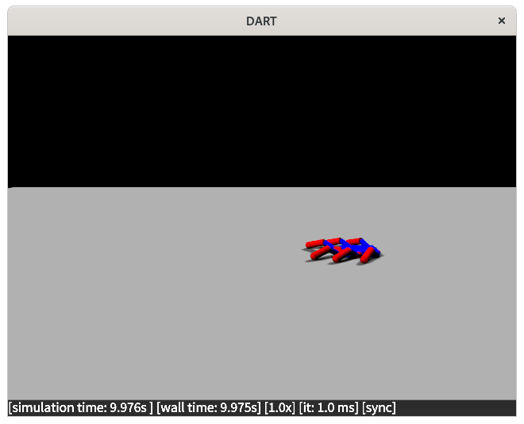

Frequently Asked Questions
This pages provides a user guide of the library through Frequently Asked Questions (FAQ).
What is a minimal working example of RobotDART
You can find a minimal working example at hello_world.cpp. This example is creating a world where a hexapod robot is placed just above a floor and left to fall. The robot has no actuation, and there is the simplest graphics configuration. Let's split it down.
- We first include the RobotDART headers:
#include <robot_dart/robot_dart_simu.hpp>
#ifdef GRAPHIC
#include <robot_dart/gui/magnum/graphics.hpp>
#endif
- We then load our hexapod robot:
auto robot = std::make_shared<robot_dart::Robot>("pexod.urdf");
- We need to place it above the floor to avoid collision (position is given as a screw vector):
robot->set_base_pose(robot_dart::make_tf({0., 0., 0.2}));
- We can now create the simulation object and add the robot and the floor:
robot_dart::RobotDARTSimu simu(0.001); // dt=0.001, 1KHz simulation
simu.add_floor();
simu.add_robot(robot);
- If needed or wanted, we can add a graphics component to visualize the scene:
#ifdef GRAPHIC
auto graphics = std::make_shared<robot_dart::gui::magnum::Graphics>();
simu.set_graphics(graphics);
graphics->look_at({0.5, 3., 0.75}, {0.5, 0., 0.2});
#endif
- Once everything is configured, we can run our simulation for a few seconds:
simu.run(10.);
- Here's how it looks:

What robots are supported in RobotDART?
RobotDART supports any robot that can be described by a URDF, SDF, SKEL or MJCF file. Nevertheless, we have a curated list of robots with edited and optimized models to be used with RobotDART (see the robots page for details and examples).
How can I load my own URDF/SDF/SKEL/MJCF file?
See the robots page for details.
How do I enable graphics in my code?
To enable graphics in your code, you need to do the following:
- Install Magnum. See the installation page for details.
- Create and set a graphics object in the simulation object. Here's an example:
#ifdef GRAPHIC
auto graphics = std::make_shared<robot_dart::gui::magnum::Graphics>();
simu.set_graphics(graphics);
graphics->look_at({0.5, 3., 0.75}, {0.5, 0., 0.2});
#endif
How do I record a video?
In order to record a video of what the main camera "sees", you need to call the function record_video(path) of the graphics class:
robot_dart::gui::magnum::GraphicsConfiguration configuration;
configuration.width = 1280;
configuration.height = 960;
configuration.bg_color = Eigen::Vector4d{1.0, 1.0, 1.0, 1.0};
auto graphics = std::make_shared<robot_dart::gui::magnum::Graphics>(configuration);
simu.set_graphics(graphics);
graphics->look_at({0., 3.5, 2.}, {0., 0., 0.25});
graphics->record_video("talos_dancing.mp4");
You can find a complete example at talos.cpp.
How can I manipulate the camera?
How can I display debug information?
What do the numbers in the status bar mean?
The status bar looks like this:

Where simulation time gives us the total simulated time (in seconds), wall time gives us the total time (in seconds) that has passed in real-time once we have started simulating. The next number X.Xx gives us the real-time factor: for example, 1.1x means that the simulation runs 1.1 times faster than real-time, whereas 0.7x means that the simulation runs slower than real-tiem. The value it: XX ms reports the time it took the last iteration (in milliseconds). The last part gives us whether the simulation tries to adhere to real-time or not. sync means that RobotDART will slow down the simulation in order for it to be in real-time, whereas no-sync means that RobotDART will try to run the simulation as fast as possible.
How can I visualize the state of my model?
Can I add change the graphics scene (e.g., change lighting conditions)?
How can I control my robot? Can I have a position-,velocity-,torque-controlled robot?
Is there a way to control the simulation timestep?
What is the difference between the DART and the FCL collision detector? How can I choose between them?
My robot does not self-collide. How can I change this?
How can I compute kinematic/dynamic properties of my robot (e.g., Jacobians, Mass Matrix)?
Is there a way to change the joint or link (body) properties (e.g., actuation, mass)?
What are the supported sensors? How can I use an IMU?
I want to have multiple camera sensors. Is it possible? How can I attach a camera to a moving link?
How can I measure forces being applied to my robot?
How can I spawn multiple robots in parallel?
The best way to do so is to create a Robot pool. With a robot pool you:
- Minimize the overhead of loading robots (it happens only once!) or cloning robots (it never happens)
- Make sure that your robots are "clean" once released from each thread
- Focus on the important stuff rather than handling robots and threads
Let's see a more practical example:
- First we need to include the proper header:
#include <robot_dart/robot_pool.hpp>
- Then we create a
creatorfunction and the pool object:
namespace pool {
// This function should load one robot: here we load Talos
std::shared_ptr<robot_dart::Robot> robot_creator()
{
std::vector<std::pair<std::string, std::string>> packages = {{"talos_description", "talos/talos_description"}};
return std::make_shared<robot_dart::Robot>("talos/talos.urdf", packages);
}
// To create the object we need to pass the robot_creator function and the number of maximum parallel threads
robot_dart::RobotPool robot_pool(robot_creator, NUM_THREADS);
} // namespace pool
The creator function is the function responsible for loading your robot. This should basically look like a standalone code to load or create a robot.
- Next, we create a few threads that utilize the robots (in your code you might be using OpenMP or TBB):
// for the example, we run NUM_THREADS threads of eval_robot()
std::vector<std::thread> threads(NUM_THREADS * 2); // *2 to see some reuse
for (size_t i = 0; i < threads.size(); ++i)
threads[i] = std::thread(eval_robot, i); // eval_robot is the function that uses the robot
- An example evaluation function:
void eval_robot(int i)
{
// We get one available robot
auto robot = pool::robot_pool.get_robot();
std::cout << "Robot " << i << " got [" << robot->skeleton() << "]" << std::endl;
/// --- some robot_dart code ---
simulate_robot(robot);
// --- do something with the result
std::cout << "End of simulation " << i << std::endl;
// CRITICAL : free your robot !
pool::robot_pool.free_robot(robot);
std::cout << "Robot " << i << " freed!" << std::endl;
}
I need to simulate many worlds with camera sensors in parallel. How can I do this?
I do not know how to use waf. How can I detect RobotDART from CMake?
You need to use waf to build RobotDART, but when installing the library a CMake module is installed. Thus it is possible use RobotDART in your code using CMake. You can find a complete example at cmake/example. In short the CMake would look like this:
cmake_minimum_required(VERSION 3.10 FATAL_ERROR)
project(robot_dart_example)
# we ask for Magnum because we want to build the graphics
find_package(RobotDART REQUIRED OPTIONAL_COMPONENTS Magnum)
add_executable(robot_dart_example example.cpp)
target_link_libraries(robot_dart_example
RobotDART::Simu
)
if(RobotDART_Magnum_FOUND)
add_executable(robot_dart_example_graphics example.cpp)
target_link_libraries(robot_dart_example_graphics
RobotDART::Simu
RobotDART::Magnum
)
endif()
I prefer coding in python. How can I use RobotDART?
RobotDART comes with python bindinds. Please refer to the installation page to see how to install them. Once the python bindings are installed, we can use RobotDART from python! An example is available at example.py. There is mostly an one-to-one mapping between C++ and python objects and functions.